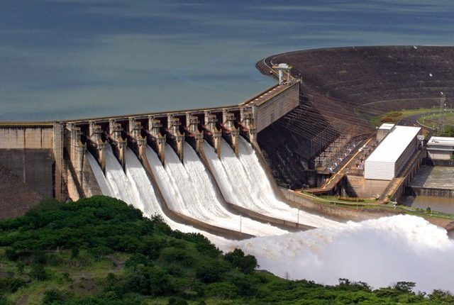
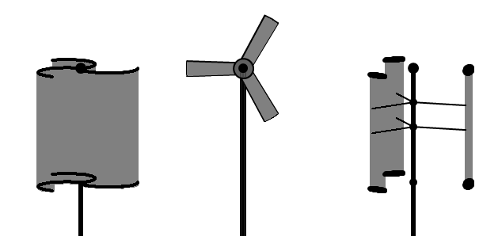
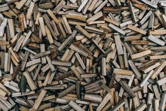
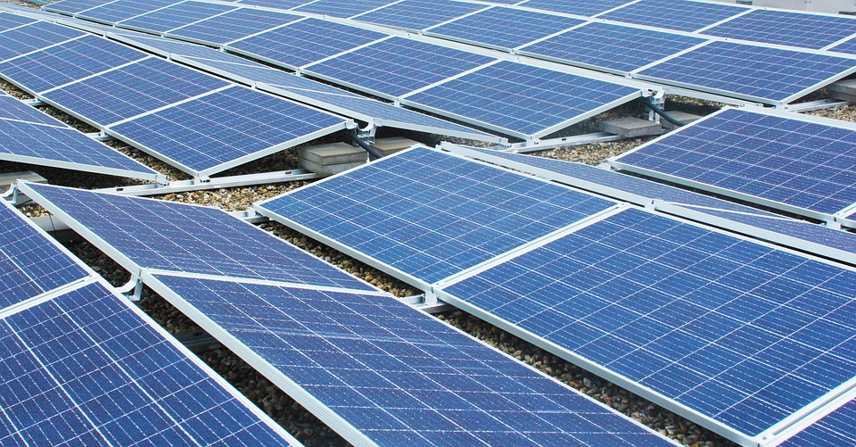
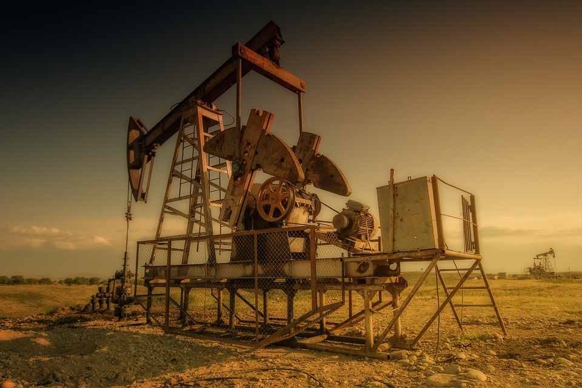
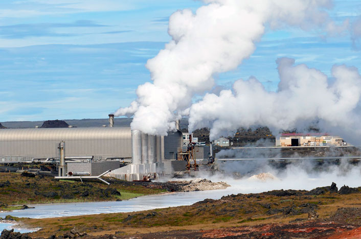
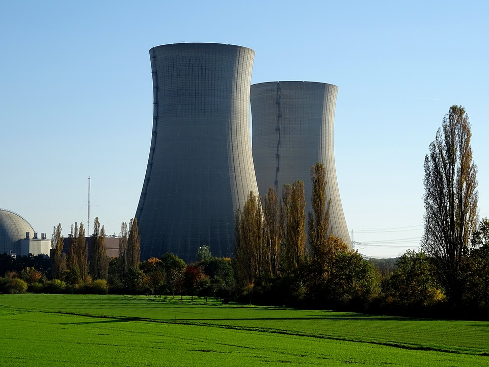
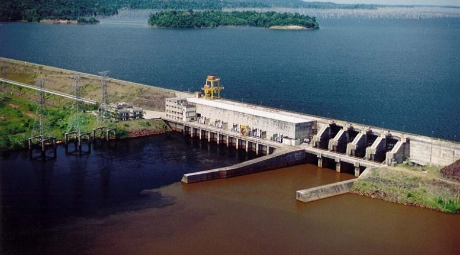

Economia Energética
Fortalecimento de uma cultura de consumo consciente de energia elétrica.
Fortalecimento de uma cultura de consumo consciente de energia elétrica.
Energia é a capacidade de algo de realizar trabalho, ou seja, gerar força num determinado corpo, substância ou sistema físico.
A energia elétrica é uma forma de potência eficaz na criação do que usualmente se chama voltagem (também conhecida como diferença de potencial elétrico) entre dois pontos, que permitem criar uma corrente elétrica (fluxo ordenado de partículas portadoras de carga elétrica) entre ambos.
Usina Hidrelétrica
Carvão Mineral

Turbinas Aerogeradoras
Biomassa
Solar
Petróleo
Usina Geotérmica
Usina Nuclear
Cada fonte energética existente possui sua classificação, seja ela renovável ou não renovável.
As fontes renováveis são aquelas que em particular, podem se auto regenerar ou por ações humanasos recursos naturais. Podem ser considerados como fontes energéticas limpas.
As fontes não renováveis são aquelas que se encontram na natureza em grandes quantidades, mas uma vez esgotadas, não podem mais ser regeneradas.
No Brasil existem cinco fontes energéticas, porém a predominante entre o território nacional são as Usinas hidrelétricas. As quatro outras fontes energéticas são elas: Energia Termoelétrica, Eólica, Nuclear e Solar.
As fontes energéticas implantadas pelo estado do Amazonas são bem diversificadas. Sendo constituído de: Energia Solar, Hidrelétrica, Biomassa, Gás Natural e Combustível Fóssil.
No município de Presidente Figueiredo, 107KM da capital do Estado. Possui uma fonte energética considerada limpa e renovável. A Usina hidreletrica do município está localizado na Vila de Balbina. Onde é concentrado a produção de energia eletrica do município.
O desperdício de energia deveria ser uma das maiores preocupações da atualidade, uma vez que a falta de compromisso com o seu uso racional e econômico, aponta a necessidade de novos meios para gerar maior quantidade de energia. Para atender a essa demanda, novas usinas hidrelétricas são criadas e embora façam parte de fontes renováveis, trazem consigo grandes destruições da fauna e da flora, processos estes já bastante conhecidos na região de Presidente Figueiredo, município onde se localiza a Usina Hidrelétrica de Balbina.
Nesse intuito, durante as aulas sobre fontes sustentáveis de energia, investigamos os alunos de nível técnico e tecnológico por meio de questionamentos sobre o uso de energia elétrica em suas casas. A escolha desse público alvo se deu pelo motivo de atendermos alunos de diversas comunidades rurais e da sede do município em questão, evidenciando um campo diversificado e fértil para a pesquisa.
Foi realizado uma entrevista. Dos entrevistados, 80% acham que não há consumo exagerado em sua casa, mas 70% afirmam que todos os aparelhos elétricos ficam constantemente ligados na tomada, pois a sua ligação se torna mais fácil. Quanto ao uso do chuveiro elétrico, dos entrevistados apenas 25% possuem esse equipamento, no entanto, o banho quente faz parte da rotina da casa. Das pessoas que tomam o banho quente, 100% não têm preocupação com o tempo do banho. Em se tratando do tipo de lâmpada das residências, 20% ainda usam a lâmpada incandescente e os 80% restantes, não diferenciam se é a fluorescente ou a de led. Somente 4% dos entrevistados fazem uso de fontes alternativas de energia em sua residência, como a roda d’agua.
Diante disto, percebe-se que não há uma política educacional voltada para o uso consciente da energia elétrica. Ainda somos frutos do incentivo ao consumo exagerado e assim o fazemos. Necessitamos urgentemente mostrar mecanismos de economias através do ensino e incentivar o uso dos recursos naturais que a região dispõe, através de fontes renováveis e não poluentes.